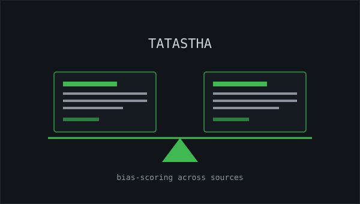
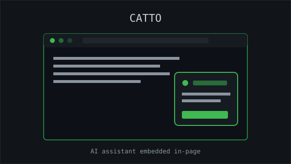

whoami
I'm a Computer Science undergrad at SRM Institute of Science and Technology (8.95 CGPA, Class of 2028), spending most of my time at the intersection of data, machine learning, and software systems.
This past year I contributed to GNU Radio as part of Google Summer of Code 2025, working on 5G NR signal-detection pipelines — and outside of that I build applied ML/NLP products like a news-bias comparison platform and an AI-powered browser extension. I like turning messy real-world data into something structured and useful, whether that's RF signals or news articles.
B.Tech Computer Science (Core) · SRM Institute of Science and Technology · Expected 2028
cat skills.json
technical
Python
JavaScript
SQL
Tableau
Data Science
Machine Learning
AI
Predictive Analytics
programming
Java
C++
React
TypeScript
FastAPI
data & analytics
Pandas
NumPy
PostgreSQL
Data Analysis
Statistics
Jupyter Notebook
tools & platforms
Git
Linux
VS Code
Cloud Computing
Agile
SDLC
soft skills
Communication
Cross-Functional Collaboration
Change Management
Critical Thinking
./experience.sh
Open Source Contributor — Google Summer of Code 2025 (GNU Radio)
Remote · Jun 2025 – Oct 2025
- Researched automated 5G NR cell-detection pipelines in Python and GNU Radio, validating synchronization strategies against 3GPP specifications.
- Designed and evaluated PSS/SSS detection and timing-alignment algorithms, analyzing accuracy and robustness across varying SNR and channel conditions.
- Built experimental DSP and data-analysis pipelines in Python, cutting manual signal-analysis effort by 70% while improving repeatability and evaluation rigor.
- Worked within a full Agile open-source SDLC, collaborating cross-functionally with mentors through milestone-driven development.
ls projects/

Tatastha — News Comparison App
A data-science and NLP-based platform for analyzing political bias and comparative reporting across media sources. Processed 1,000+ news articles using ML and predictive analytics to surface ideological skew and bias-scoring patterns, with a custom pipeline for preprocessing and comparative summarization.
Python
FastAPI
React
TypeScript
PostgreSQL
NLP

Catto — AI-Powered Browser Extension
A Chrome/Edge extension that embeds an AI assistant directly into the page, parsing live webpage content and DOM structure for contextual, in-page interaction. Includes a floating chat widget for querying page content and requesting simple in-page edits through AI-driven inference.
JavaScript
Chrome Extension APIs
LLM Integration
DOM Manipulation
./contact